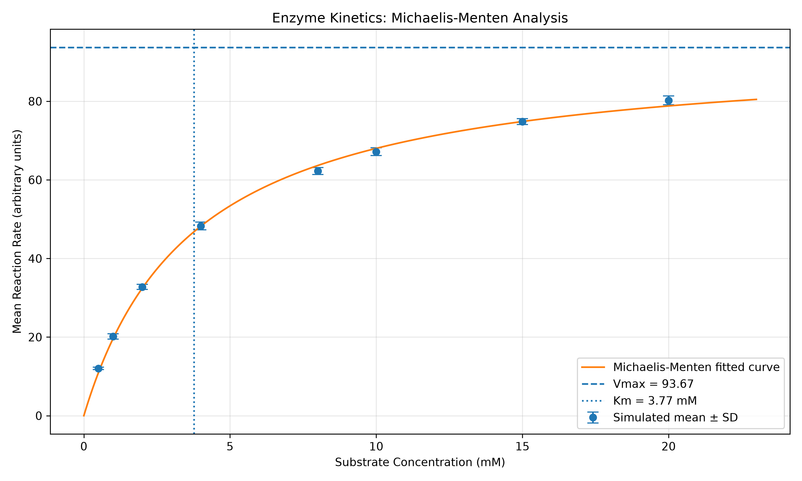

1. Project Overview
This project investigates the relationship between substrate concentration and enzyme reaction rate using a simulated biochemical dataset. The analysis applies computational methods to characterize enzyme kinetics, estimate kinetic parameters and visualize the relationship between substrate concentration and reaction velocity.
Python was used to organize the data, calculate descriptive statistics, fit a nonlinear kinetic model and generate scientific visualizations. The project demonstrates how computational approaches can support the interpretation of biochemical processes.
2. Analytical Objectives
- Investigate the relationship between substrate concentration and reaction rate.
- Calculate descriptive statistics for replicated observations.
- Fit a nonlinear Michaelis-Menten kinetic model.
- Estimate Vmax and Km from the simulated dataset.
- Visualize the experimental-style observations and fitted kinetic curve.
- Interpret the results within the context of enzyme kinetics.
- Develop reproducible computational workflows for biochemical data analysis.
3. Dataset
The dataset consists of simulated enzyme reaction rate observations across eight substrate concentrations. Each concentration contains three replicate measurements.
Substrate concentrations ranged from 0.5 mM to 20 mM.
4. Computational Methodology
Data Preparation
The dataset was loaded into Python using pandas and organized into substrate concentration and reaction rate variables.
Descriptive Statistics
Replicate measurements were grouped by substrate concentration. Mean, standard deviation and coefficient of variation were calculated.
Nonlinear Model Fitting
SciPy was used to fit the Michaelis-Menten model to the observed reaction rates using nonlinear regression.
Visualization
Matplotlib was used to produce a kinetic curve illustrating the relationship between substrate concentration and reaction rate.
Interpretation
Estimated kinetic parameters and statistical results were interpreted in the context of enzyme kinetics.
5. Mathematical Model
Enzyme kinetics were modelled using the Michaelis-Menten equation, which describes the relationship between substrate concentration and reaction velocity under the assumptions of the model.
Michaelis-Menten kinetic equation
- v: Reaction velocity.
- Vmax: Estimated maximum reaction velocity under the model.
- [S]: Substrate concentration.
- Km: Michaelis constant, representing the substrate concentration at which the model predicts half of Vmax.
6. Results
Nonlinear regression was used to estimate the kinetic parameters of the simulated enzyme kinetics dataset.
7. Michaelis-Menten Visualization
The figure below is the actual graph generated by the Python analysis script. It presents the kinetic relationship between substrate concentration and reaction velocity together with the fitted Michaelis-Menten model.

Figure 1. Python-generated Michaelis-Menten kinetic visualization from the simulated enzyme kinetics dataset.
8. Descriptive Statistics
Summary statistics were calculated for each substrate concentration.
| Substrate (mM) | Mean Rate | SD | N | CV (%) |
|---|---|---|---|---|
| 0.5 | 12.033 | 0.321 | 3 | 2.671 |
| 1 | 20.167 | 0.651 | 3 | 3.226 |
| 2 | 32.767 | 0.651 | 3 | 1.986 |
| 4 | 48.267 | 0.971 | 3 | 2.012 |
| 8 | 62.267 | 0.874 | 3 | 1.403 |
| 10 | 67.167 | 0.971 | 3 | 1.446 |
| 15 | 74.833 | 0.751 | 3 | 1.003 |
| 20 | 80.233 | 1.124 | 3 | 1.401 |
9. Scientific Interpretation
Substrate Concentration
Reaction rates increased with substrate concentration throughout the observed range. This is consistent with the substrate-dependent increase in reaction velocity described by the Michaelis-Menten model.
Model Saturation
The fitted model predicts a progressively smaller increase in reaction velocity as substrate concentration rises, approaching the estimated maximum rate.
Km Interpretation
The estimated Km of 3.772 mM corresponds to the substrate concentration at which the fitted model predicts half of its maximum velocity.
Replicate Variability
The calculated coefficients of variation indicate relatively low variability among the simulated replicate observations across the substrate concentrations.
10. Limitations
- The dataset was simulated and does not represent measurements obtained from an actual laboratory experiment.
- The estimated kinetic parameters are dependent on the simulated dataset and the model used.
- The analysis assumes that the Michaelis-Menten model adequately describes the observed relationship.
- The dataset contains a limited number of substrate concentrations and replicates.
- Additional experimental conditions, enzyme properties and sources of measurement error were not investigated.
11. Computational Toolkit
The analysis was developed using the following Python libraries and tools:
12. Reproducibility
The project contains the Python analysis script, dataset, generated visualizations, statistical outputs, Excel workbook and scientific report.
The repository provides the computational resources necessary to inspect the analysis workflow and reproduce the outputs using the documented Python dependencies.
The analysis script automatically generates summary statistics, kinetic parameter estimates, visualizations and the analytical workbook.
13. Conclusion
This project demonstrates the application of computational methods to biochemical data analysis. Using Python, simulated enzyme kinetics observations were organized, statistically summarized, modelled and visualized.
The nonlinear Michaelis-Menten model provided estimates of Vmax and Km, while statistical analysis characterized the replicate observations.
The project contributes to the development of computational skills relevant to bioinformatics, systems biology, quantitative biochemistry and scientific data analysis.
Explore the Project
View the complete source code, dataset, analysis outputs and scientific report.
View GitHub Repository Back to Portfolio